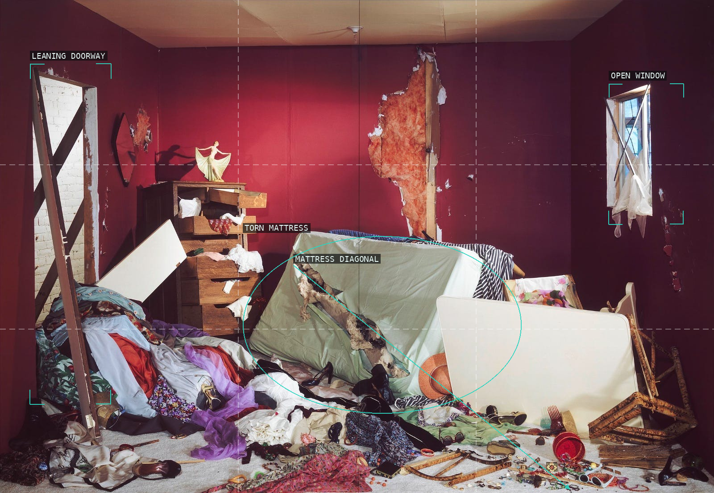
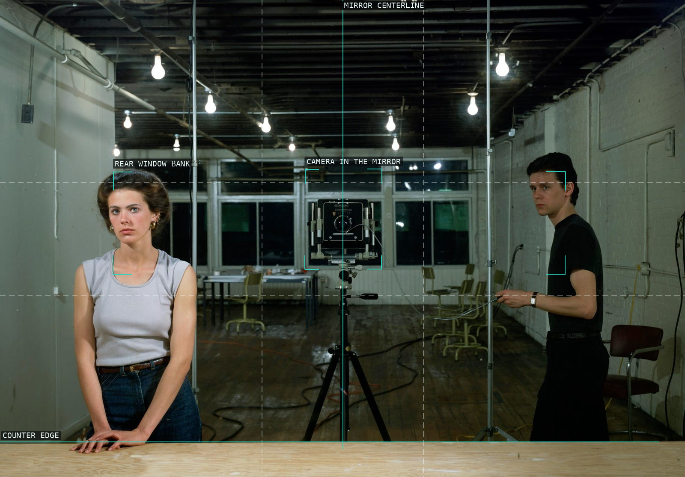
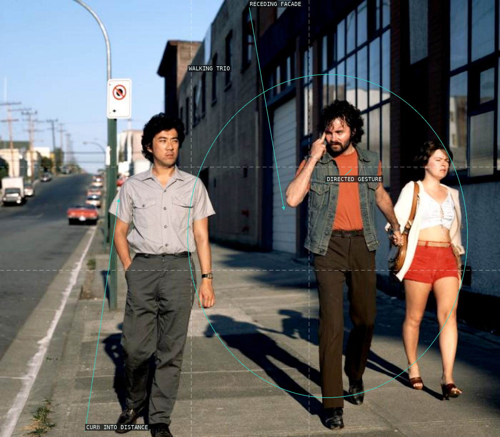
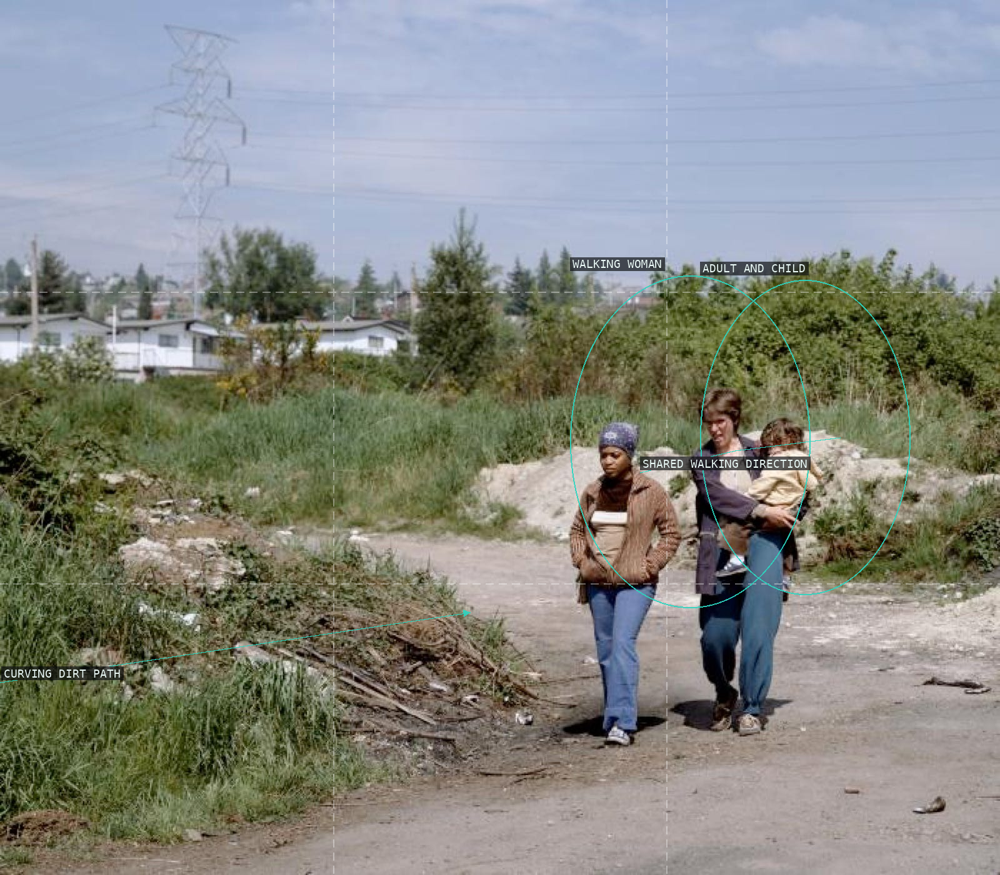
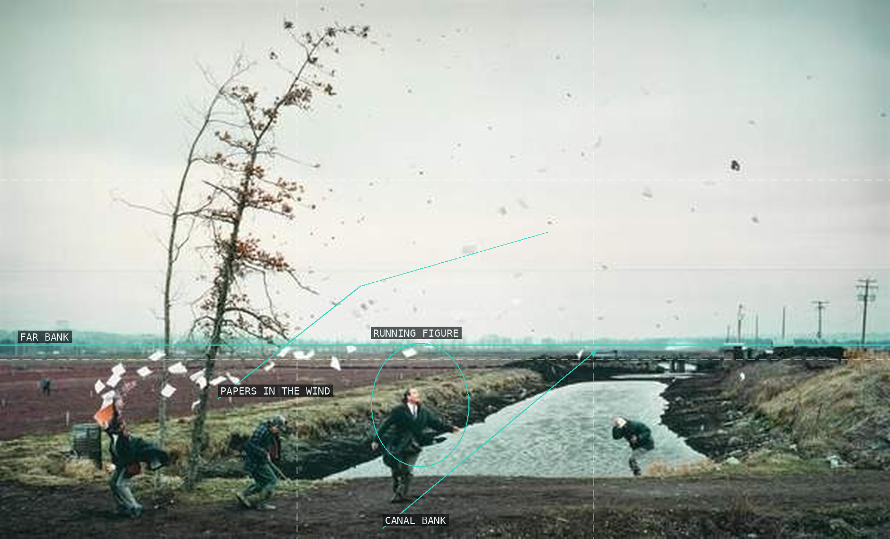
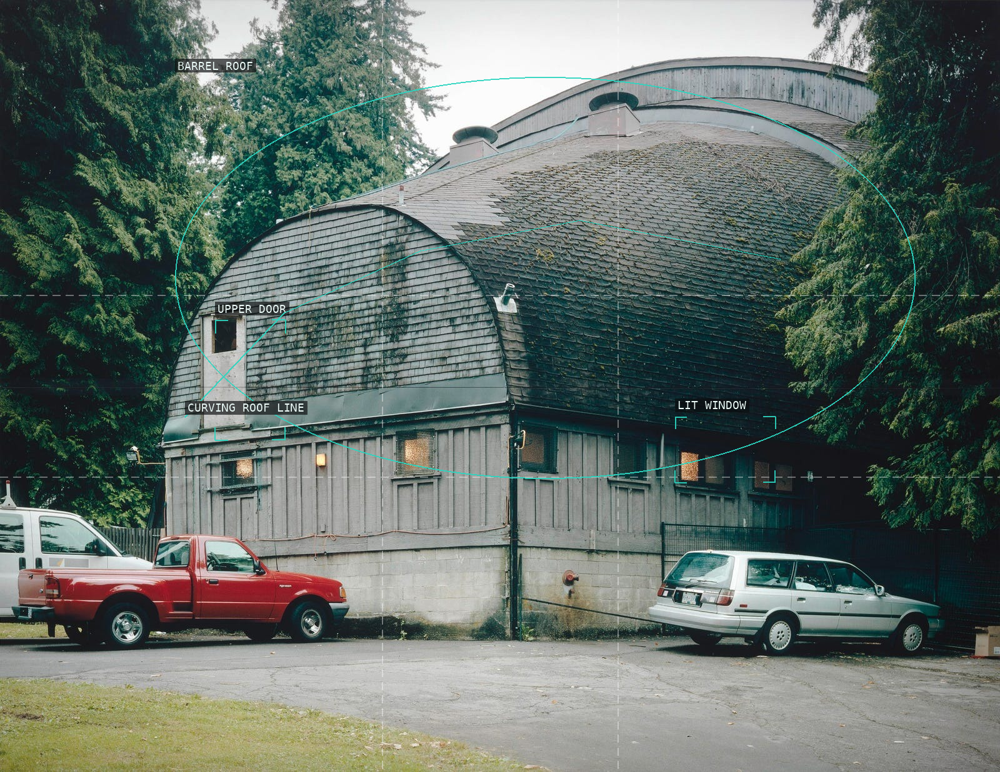
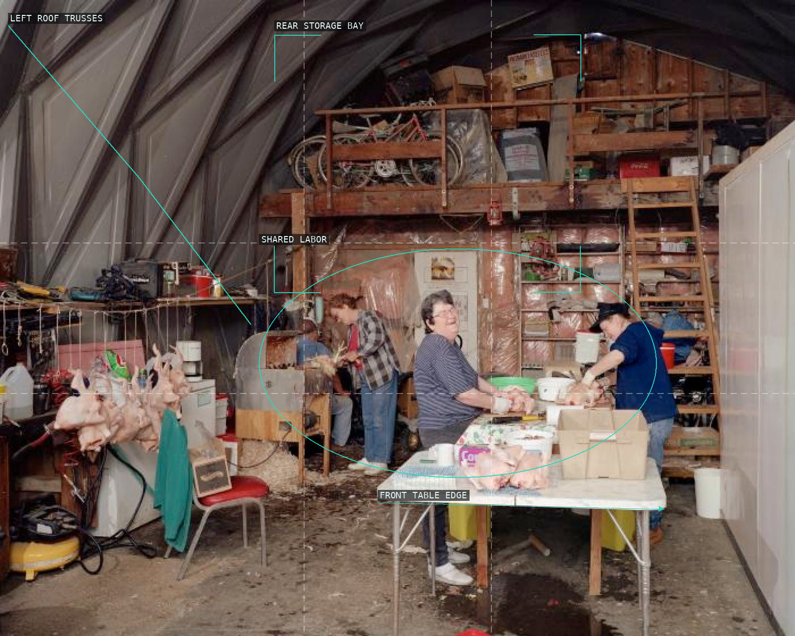
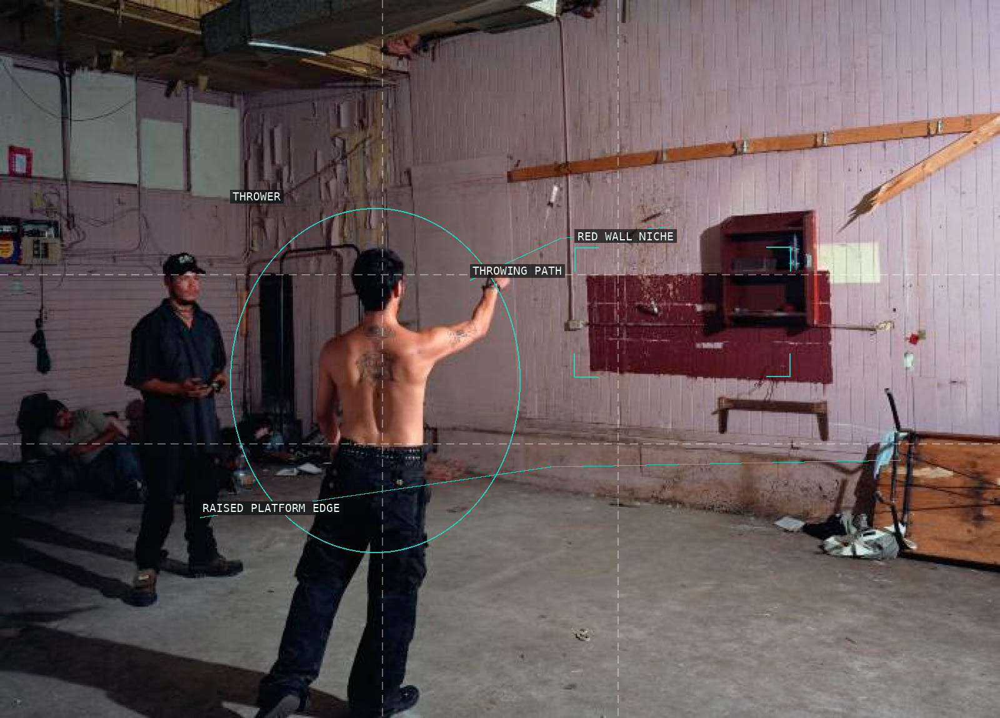
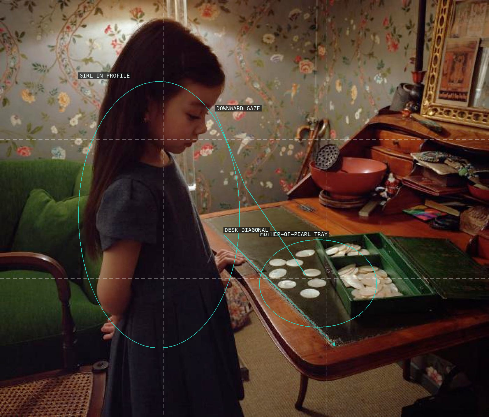

The room's broken edges turn domestic wreckage into a deliberately staged set of receding and opposing diagonals.

A camera on the mirror axis makes the photographer, model, and viewer part of one reciprocal arrangement.

The sidewalk's recession keeps a charged three-person encounter visibly connected to the wider street.

A small family group is held to one side of an exposed threshold and its converging track.

The high view converts a simple act of digging into a tight relation between a body, a tool, and a deep void.

Bodies, papers, tree, and canal carry a single gust diagonally across an otherwise open panorama.

The curved theatre roof gives a street-side building portrait the enclosed scale of a constructed stage.

A crowded worktable gathers separate gestures into a shallow but active interior tableau.

A raised arm sends a small, uncertain trajectory across a deliberately broad field of empty workshop wall.

A child, a tabletop, and reflective shells make attention travel through a compact domestic arrangement.